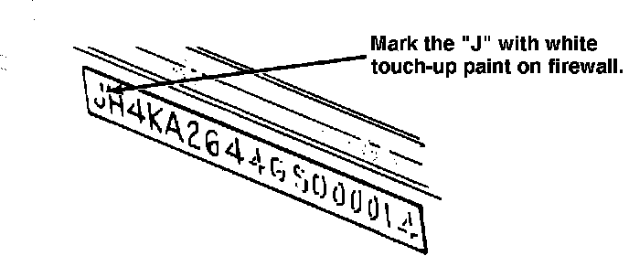
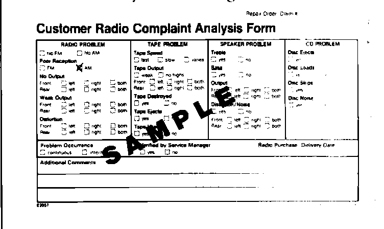

Audio - Intermittent AM Band Distortion
87acura01December 7, 1987
YEAR MODEL APPLICATION
1987 LEGEND up to
COUPE VIN HC005585
87-016
AM Band Distortion (Supersedes 87-016, dated August 10, 1987)
SYMPTOM
Intermittent distortion on AM band during talk shows, news, and commercials. Not heard during music.
NOTE: It may be impossible to verify this complaint because the symptom may not be reproducible in your area.
CORRECTIVE ACTION
1. Replace the defective audio unit with an "improved" unit from the float stock (see Service Bulletin 87-015 "Radio Exchange Program").
NOTE: If AHM doesn't receive the exchange radio, then the dealership will be debited the labor and radio costs.

2. Mark the J in the vehicle identification number (stamped on the firewall) with white touch-up paint to indicate the unit has been updated.

3. Mark the Poor Reception [ ] AM box on the "Customer Radio Complaint Analysis Form" and the appropriate response to the Problem Occurrence and Verified by Service Manager sections.
WARRANTY CLAIM INFORMATION
Operation number: 010500
Flat rate time: 0.6 hr. A - 0.2 hr. (for center console removal and reinstallation)
B - 0.4 hr. (for administration)
Failed P/N: Number of radios being exchanged
Defect code: 068
Contention code: B02 Parts used to complete repair: Leave blank
NOTE: Transmit via ACURALINK DCS "QUICK CLAIM" format.